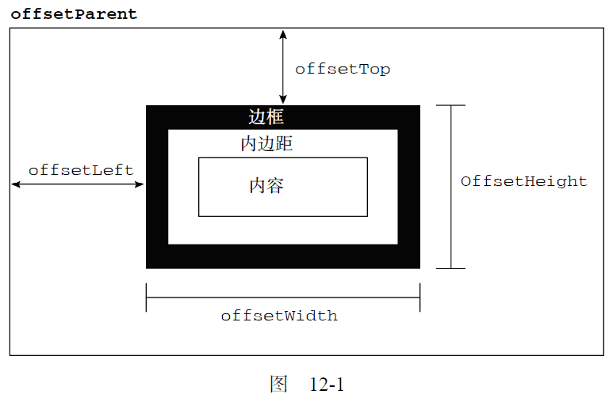
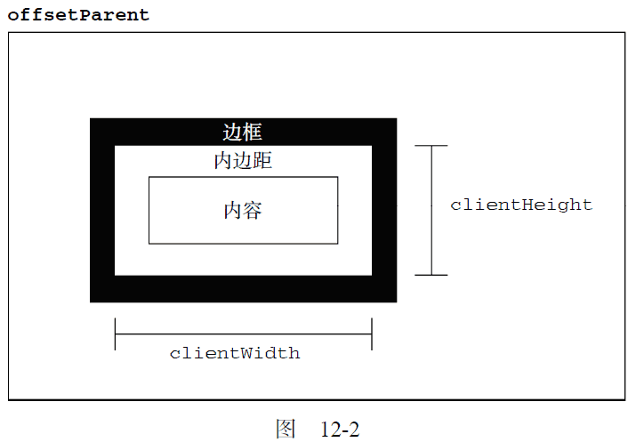
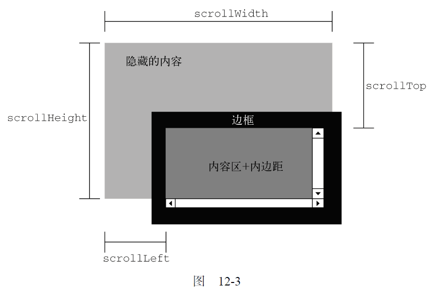

12.2.3 元素大小
本节介绍的属性和方法并不属于“DOM2 级样式”规范，但却与HTML 元素的样式息息相关。DOM中没有规定如何确定页面中元素的大小。IE 为此率先引入了一些属性，以便开发人员使用。目前，所有主要的浏览器都已经支持这些属性。
1. 偏移量
首先要介绍的属性涉及偏移量（offset dimension），包括元素在屏幕上占用的所有可见的空间。元素的可见大小由其高度、宽度决定，包括所有内边距、滚动条和边框大小（注意，不包括外边距）。通过下列4 个属性可以取得元素的偏移量。
-
offsetHeight：元素在垂直方向上占用的空间大小，以像素计。包括元素的高度、（可见的）水平滚动条的高度、上边框高度和下边框高度。
-
offsetWidth：元素在水平方向上占用的空间大小，以像素计。包括元素的宽度、（可见的）垂直滚动条的宽度、左边框宽度和右边框宽度。
-
offsetLeft：元素的左外边框至包含元素的左内边框之间的像素距离。
-
offsetTop：元素的上外边框至包含元素的上内边框之间的像素距离。
其中，offsetLeft 和offsetTop 属性与包含元素有关，包含元素的引用保存在offsetParent属性中。offsetParent 属性不一定与parentNode 的值相等。例如，<td>元素的offsetParent 是作为其祖先元素的<table>元素，因为<table>是在DOM层次中距<td>最近的一个具有大小的元素。
图12-1 形象地展示了上面几个属性表示的不同大小。

要想知道某个元素在页面上的偏移量，将这个元素的offsetLeft 和offsetTop 与其offsetParent的相同属性相加，如此循环直至根元素，就可以得到一个基本准确的值。以下两个函数就可以用于分别取得元素的左和上偏移量。
function getElementLeft(element) {
var actualLeft = element.offsetLeft;
var current = element.offsetParent;
while (current !== null) {
actualLeft += current.offsetLeft;
current = current.offsetParent;
}
return actualLeft;
}
边框内边距内容OffsetHeight offsetWidth offsetTop offsetLeft offsetParent
function getElementTop(element) {
var actualTop = element.offsetTop;
var current = element.offsetParent;
while (current !== null) {
actualTop += current.offsetTop;
current = current.offsetParent;
}
return actualTop;
}
运行一下
这两个函数利用offsetParent 属性在DOM 层次中逐级向上回溯，将每个层次中的偏移量属性合计到一块。对于简单的CSS 布局的页面，这两函数可以得到非常精确的结果。对于使用表格和内嵌框架布局的页面，由于不同浏览器实现这些元素的方式不同，因此得到的值就不太精确了。一般来说，页面中的所有元素都会被包含在几个<div>元素中，而这些<div>元素的offsetParent 又是<body>元素，所以getElementLeft()与getElementTop()会返回与offsetLeft 和offsetTop相同的值。
所有这些偏移量属性都是只读的，而且每次访问它们都需要重新计算。因此，应该尽量避免重复访问这些属性；如果需要重复使用其中某些属性的值，可以将它们保存在局部变量中，以提高性能。
2. 客户区大小
元素的客户区大小（client dimension），指的是元素内容及其内边距所占据的空间大小。有关客户区大小的属性有两个：clientWidth 和clientHeight。其中，clientWidth 属性是元素内容区宽度加上左右内边距宽度；clientHeight 属性是元素内容区高度加上上下内边距高度。图12-2 形象地说明了这些属性表示的大小。

从字面上看，客户区大小就是元素内部的空间大小，因此滚动条占用的空间不计算在内。最常用到这些属性的情况，就是像第8 章讨论的确定浏览器视口大小的时候。如下面的例子所示，要确定浏览器视口大小，可以使用document.documentElement 或document.body（在IE7 之前的版本中）的clientWidth 和clientHeight。
function getViewport() {
if (document.compatMode == "BackCompat") {
return {
width: document.body.clientWidth,
height: document.body.clientHeight
};
} else {
return {
width: document.documentElement.clientWidth,
height: document.documentElement.clientHeight
};
}
}
这个函数首先检查document.compatMode 属性，以确定浏览器是否运行在混杂模式。Safari 3.1之前的版本不支持这个属性，因此就会自动执行else 语句。Chrome、Opera 和Firefox 大多数情况下都运行在标准模式下，因此它们也会前进到else 语句。这个函数会返回一个对象，包含两个属性：width和height；表示浏览器视口（<html>或<body>元素）的大小。
与偏移量相似，客户区大小也是只读的，也是每次访问都要重新计算的。
3. 滚动大小
最后要介绍的是滚动大小（scroll dimension），指的是包含滚动内容的元素的大小。有些元素（例如<html>元素），即使没有执行任何代码也能自动地添加滚动条；但另外一些元素，则需要通过CSS 的overflow 属性进行设置才能滚动。以下是4 个与滚动大小相关的属性。
-
scrollHeight：在没有滚动条的情况下，元素内容的总高度。
-
scrollWidth：在没有滚动条的情况下，元素内容的总宽度。
-
scrollLeft：被隐藏在内容区域左侧的像素数。通过设置这个属性可以改变元素的滚动位置。
-
scrollTop：被隐藏在内容区域上方的像素数。通过设置这个属性可以改变元素的滚动位置。
图12-3 展示了这些属性代表的大小。
scrollWidth 和scrollHeight 主要用于确定元素内容的实际大小。例如，通常认为<html>元素是在Web 浏览器的视口中滚动的元素（IE6 之前版本运行在混杂模式下时是<body>元素）。因此，带有垂直滚动条的页面总高度就是document.documentElement.scrollHeight。
对于不包含滚动条的页面而言， scrollWidth 和scrollHeight 与clientWidth 和clientHeight 之间的关系并不十分清晰。在这种情况下，基于document.documentElement 查看这些属性会在不同浏览器间发现一些不一致性问题，如下所述。
-
Firefox 中这两组属性始终都是相等的，但大小代表的是文档内容区域的实际尺寸，而非视口的尺寸。
-
Opera、Safari 3.1 及更高版本、Chrome 中的这两组属性是有差别的，其中scrollWidth 和scrollHeight 等于视口大小，而clientWidth 和clientHeight 等于文档内容区域的大小。
-
IE（在标准模式）中的这两组属性不相等，其中scrollWidth 和scrollHeight 等于文档内容区域的大小，而clientWidth 和clientHeight 等于视口大小。

在确定文档的总高度时（包括基于视口的最小高度时），必须取得scrollWidth/clientWidth 和scrollHeight/clientHeight 中的最大值，才能保证在跨浏览器的环境下得到精确的结果。下面就是这样一个例子。
var docHeight = Math.max(document.documentElement.scrollHeight,
document.documentElement.clientHeight);
var docWidth = Math.max(document.documentElement.scrollWidth,
document.documentElement.clientWidth);
注意，对于运行在混杂模式下的IE，则需要用document.body 代替document.document-Element。
通过scrollLeft 和scrollTop 属性既可以确定元素当前滚动的状态，也可以设置元素的滚动位置。在元素尚未被滚动时，这两个属性的值都等于0。如果元素被垂直滚动了，那么scrollTop 的值会大于0，且表示元素上方不可见内容的像素高度。如果元素被水平滚动了，那么scrollLeft 的值会大于0，且表示元素左侧不可见内容的像素宽度。这两个属性都是可以设置的，因此将元素的scrollLeft 和scrollTop 设置为0，就可以重置元素的滚动位置。下面这个函数会检测元素是否位于顶部，如果不是就将其回滚到顶部。
function scrollToTop(element) {
if (element.scrollTop != 0) {
element.scrollTop = 0;
}
}
这个函数既取得了scrollTop 的值，也设置了它的值。
4. 确定元素大小
IE、Firefox 3+、Safari 4+、Opera 9.5 及Chrome 为每个元素都提供了一个getBoundingClientRect()方法。这个方法返回会一个矩形对象，包含4 个属性：left、top、right 和bottom。这些属性给出了元素在页面中相对于视口的位置。但是，浏览器的实现稍有不同。IE8 及更早版本认为文档的左上角坐标是(2, 2)，而其他浏览器包括IE9 则将传统的(0,0)作为起点坐标。因此，就需要在一开始检查一下位于(0,0)处的元素的位置，在IE8 及更早版本中，会返回(2,2)，而在其他浏览器中会返回(0,0)。来看下面的函数：
function getBoundingClientRect(element) {
if (typeof arguments.callee.offset != "number") {
var scrollTop = document.documentElement.scrollTop;
var temp = document.createElement("div");
temp.style.cssText = "position:absolute;left:0;top:0;";
document.body.appendChild(temp);
arguments.callee.offset = -temp.getBoundingClientRect().top - scrollTop;
document.body.removeChild(temp);
temp = null;
}
var rect = element.getBoundingClientRect();
var offset = arguments.callee.offset;
return {
left: rect.left + offset,
right: rect.right + offset,
top: rect.top + offset,
bottom: rect.bottom + offset
};
}
运行一下
这个函数使用了它自身的属性来确定是否要对坐标进行调整。第一步是检测属性是否有定义，如果没有就定义一个。最终的offset 会被设置为新元素上坐标的负值，实际上就是在IE 中设置为-2，在Firefox 和Opera 中设置为-0。为此，需要创建一个临时的元素，将其位置设置在(0,0)，然后再调用其getBoundingClientRect()。而之所以要减去视口的scrollTop，是为了防止调用这个函数时窗口被滚动了。这样编写代码，就无需每次调用这个函数都执行两次getBoundingClientRect()了。接下来，再在传入的元素上调用这个方法并基于新的计算公式创建一个对象。
对于不支持getBoundingClientRect()的浏览器，可以通过其他手段取得相同的信息。一般来说，right 和left 的差值与offsetWidth 的值相等，而bottom 和top 的差值与offsetHeight相等。而且，left 和top 属性大致等于使用本章前面定义的getElementLeft()和getElementTop()函数取得的值。综合上述，就可以创建出下面这个跨浏览器的函数：
function getBoundingClientRect(element) {
var scrollTop = document.documentElement.scrollTop;
var scrollLeft = document.documentElement.scrollLeft;
if (element.getBoundingClientRect) {
if (typeof arguments.callee.offset != "number") {
var temp = document.createElement("div");
temp.style.cssText = "position:absolute;left:0;top:0;";
document.body.appendChild(temp);
arguments.callee.offset = -temp.getBoundingClientRect().top - scrollTop;
document.body.removeChild(temp);
temp = null;
}
var rect = element.getBoundingClientRect();
var offset = arguments.callee.offset;
return {
left: rect.left + offset,
right: rect.right + offset,
top: rect.top + offset,
bottom: rect.bottom + offset
};
} else {
var actualLeft = getElementLeft(element);
var actualTop = getElementTop(element);
return {
left: actualLeft - scrollLeft,
right: actualLeft + element.offsetWidth - scrollLeft,
top: actualTop - scrollTop,
bottom: actualTop + element.offsetHeight - scrollTop
}
}
}
运行一下
这个函数在getBoundingClientRect()有效时，就使用这个原生方法，而在这个方法无效时则使用默认的计算公式。在某些情况下，这个函数返回的值可能会有所不同，例如使用表格布局或使用滚动元素的情况下。
由于这里使用了arguments.callee，所以这个方法不能在严格模式下使用。